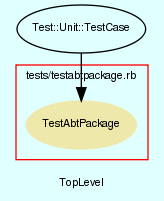

|  |
TestAbtPackage.rb
Unit testing for AbtPackage class.
Created by Eric D. Schabell <erics@abtlinux.org> Copyright 2006, GPL.
This file is part of AbTLinux.
AbTLinux is free software; you can redistribute it and/or modify it under the terms of the GNU General Public License as published by the Free Software Foundation; either version 2 of the License, or (at your option) any later version.
AbTLinux is distributed in the hope that it will be useful, but WITHOUT ANY WARRANTY; without even the implied warranty of MERCHANTABILITY or FITNESS FOR A PARTICULAR PURPOSE. See the GNU General Public License for more details.
You should have received a copy of the GNU General Public License along with AbTLinux; if not, write to the Free Software Foundation, Inc., 51 Franklin St, Fifth Floor, Boston, MA 02110-1301 USA
setup method for testing AbtPackage.
[ show source ]
# File TestAbtPackage.rb, line 51
51: def setup
52: @ipc = Ipc.new
53: end
Test method for ‘AbtPackage.testBuild()’
[ show source ]
# File TestAbtPackage.rb, line 86
86: def testBuild
87: if ( !@ipc.pre() )
88: assert_equals( true, false, "testConfigure()" )
89: end
90: if ( !@ipc.configure() )
91: assert_equals( true, false, "testConfigure()" )
92: end
93: assert( @ipc.build(), "testBuild()" )
94: end
Test method for ‘AbtPackage.testConfigure()’
[ show source ]
# File TestAbtPackage.rb, line 76
76: def testConfigure
77: if ( !@ipc.pre() )
78: assert_equals( true, false, "testConfigure()" )
79: end
80: assert( @ipc.configure(), "testConfigure()" )
81: end
Test method for ‘AbtPackage.testDetails()’
[ show source ]
# File TestAbtPackage.rb, line 58
58: def testDetails
59: assert_equal( $dataTest['name'], @ipc.details['Package name'], "testDetails()" )
60: assert_equal( $dataTest['execName'], @ipc.details['Executable'], "testDetails()" )
61: assert_equal( $dataTest['version'], @ipc.details['Version'], "testDetails()" )
62: assert_equal( $dataTest['srcDir'], @ipc.details['Source location'], "testDetails()" )
63: assert_equal( $dataTest['homepage'], @ipc.details['Homepage'], "testDetails()" )
64: end
Test method for ‘AbtPackage.testInstall()’
[ show source ]
# File TestAbtPackage.rb, line 106
106: def testInstall
107: assert_equal( false, true, "testInstall()" )
108: end
Test method for ‘AbtPackage.testPost()’
[ show source ]
# File TestAbtPackage.rb, line 113
113: def testPost
114: assert( @ipc.post(), "testPost()" )
115: end
Test method for ‘AbtPackage.testPre()’
[ show source ]
# File TestAbtPackage.rb, line 69
69: def testPre
70: assert( @ipc.pre(), "testPre()" )
71: end
Test method for ‘AbtPackage.testPreinstall()’
[ show source ]
# File TestAbtPackage.rb, line 99
99: def testPreinstall
100: assert( @ipc.preinstall(), "testPreinstall()" )
101: end